The crew lead's day on the phone
On the crew phone app: Jersey Shore Pavers — Crew.
-
 1
1Today
The crew lead's phone. Each morning starts here: your crew, today's jobs, and the one thing to do next. Big buttons, made for gloves and sunshine.
-
 2
2Who is here today?
Your usual crew is listed. Switch off anyone who didn't come, so their hours and the job costs stay right.
-
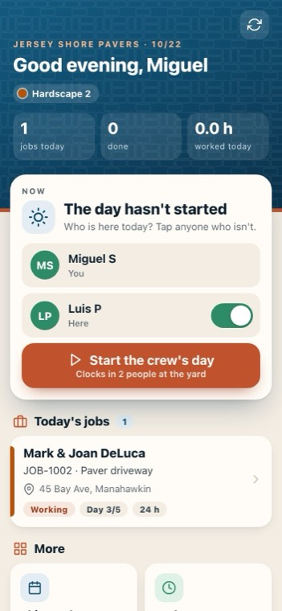
3Start the crew's day
One tap clocks in everyone who is here, at the yard.
-
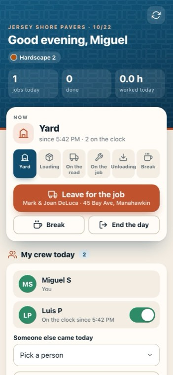
4What the crew is doing
Yard, loading, on the road, on the job, unloading, break. One tap moves everyone's time, so the office sees where the day went.
-
 5
5Leave for the job
The whole crew is now on the road.
-
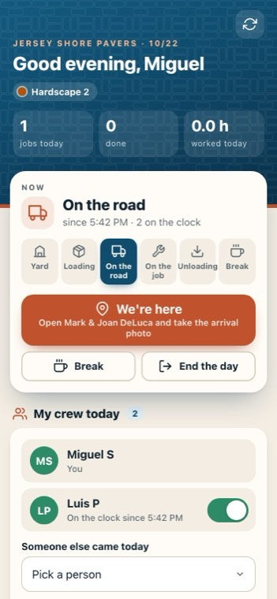
6We're here
Opens the job to take the arrival photo.
-
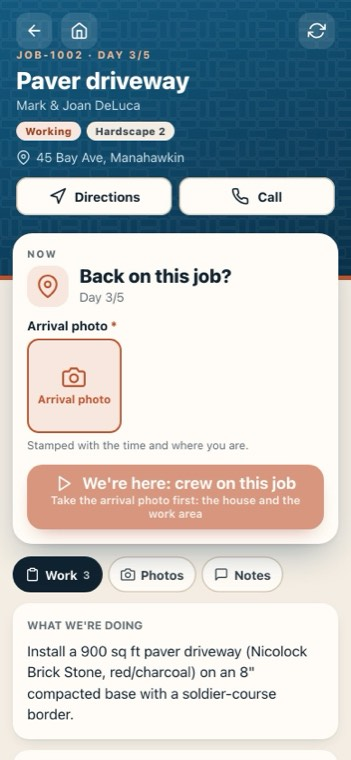
7The arrival photo
Needed to start: the house and the work area, stamped with the time and where you are.
-
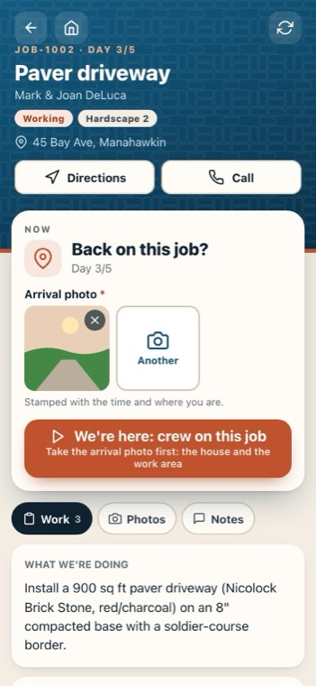
8Start the job
Records the start with the photo and G.P.S. The customer gets a message that the crew has arrived, and the crew's time moves onto the job.
-
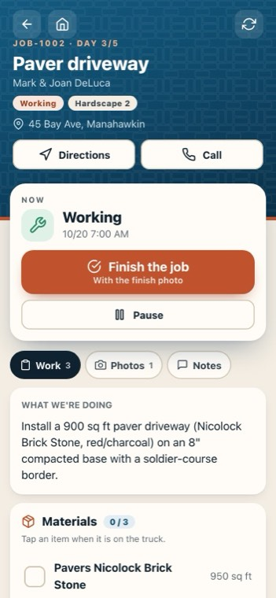
9Work, photos and notes
What we're doing and the materials to load, the job's photos, and notes for the office.
-
 10
10Finish the job
When the work is done.
-
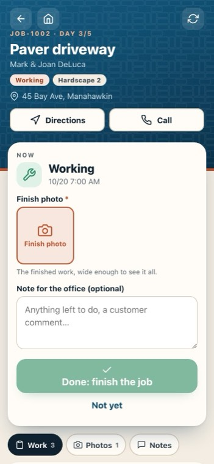
11The finish photo
The finished work, wide enough to see it all.
-
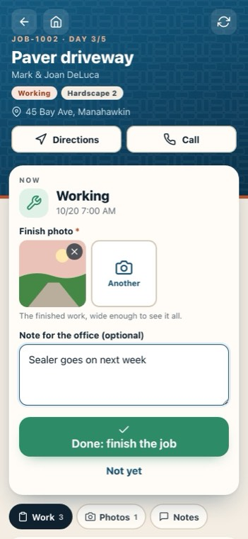
12A note for the office
Anything left to do, or what the customer said.
-
 13
13Done
The job is complete, and the office is told straight away.
-
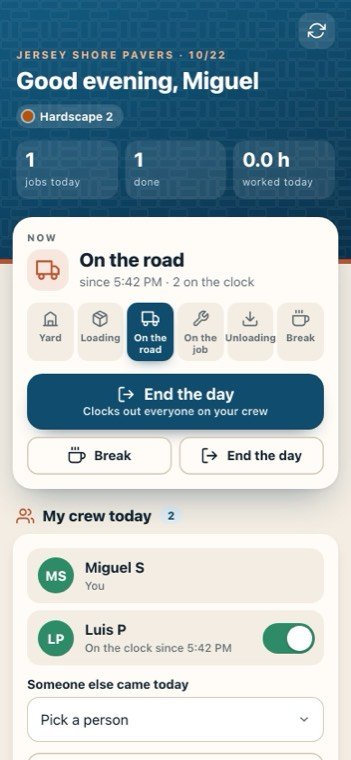
14Breaks
Break stops the clock on the work. Back to work picks up where the crew left off.
-
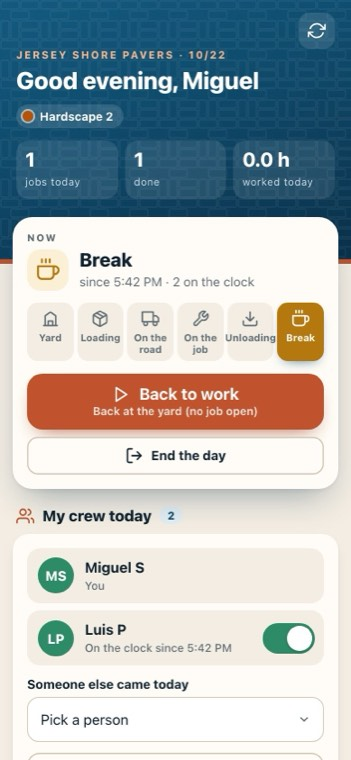
15Back to work
One big button.
-
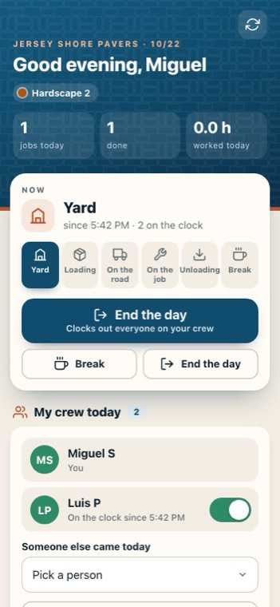
16End the day
Tap it twice: it clocks out the whole crew. My hours shows the day as a timeline.